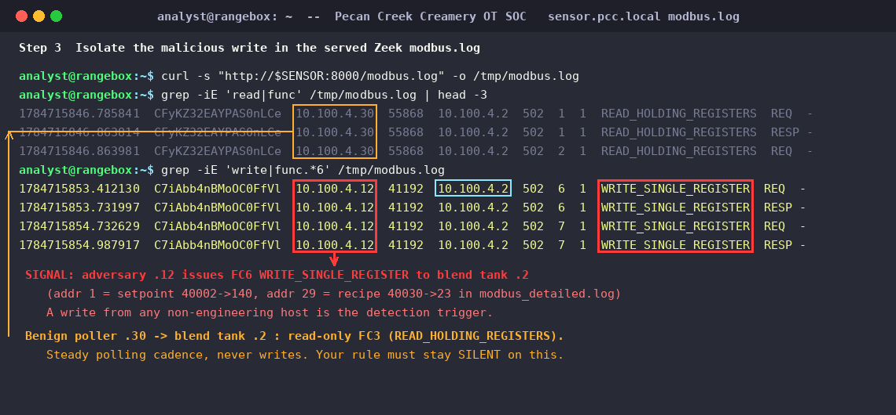

Exercise OTSOC-3.2: Write the Detection
Engagement Status
| Client | Pecan Creek Creamery (fictional) |
|---|---|
| Role | OT SOC Analyst, Detection Engineering |
| Phase | Reconstruction Detection Engineering Threat Hunting |
What you know so far: You mapped the blend tank intrusion to ATT&CK in the last exercise. The same unauthorized write is now recurring on the line. Mapping a past attack is worth nothing if it does not produce a detection that catches the next one. The deliverable here is a working rule that fires on the attack and stays quiet on the benign baseline.
Scenario
The intrusion you reconstructed is running again on the Pecan Creek Creamery blend tank. A scripted adversary on the OT segment, the inject host, runs a Modbus function code 3 read sweep against the blend tank mix.pcc.local, then issues function code 6 writes to the agitator setpoint (register 40002) and the recipe id (register 40030). The adversary acts on its own; your job is to detect it.
You write a Suricata or Zeek detection that fires on the unauthorized write and stays silent on the legitimate maintenance-window traffic. Your data source is the passive sensor at sensor.pcc.local, which serves Zeek logs from a recorded capture of the plant control network. Hosts appear in that capture with the plant control addressing (10.100.4.x), and the capture holds both the benign read-only FC3 polling baseline and the adversary's FC6 writes, so the modbus.log you tune against carries the signal and the noise together. To prove the attack actually landed on the PLC, the blend tank exposes a deterministic tamper marker: a holding-register block at 40801 that reads CLEAN_BLEND_NO_WRITES on a pristine tank and flips to DIRTY_WRITES_DETECTED after any wire write, plus an input register at 30004 (write_event_count) that increments on every dangerous write. Reading the DIRTY marker and a nonzero counter is your deterministic proof: you write up your rule plus that confirmation and submit the writeup to the Deliverable Grader, which returns the flag when the writeup passes.
Why this matters
Detection engineering is where threat intelligence stops being a slide and becomes a control. A rule that fires on every Modbus write would technically catch the attack, but it would also scream during every sanctioned maintenance change until the SOC mutes it, and a muted rule catches nothing. The hard part of this exercise is not writing a signature; it is tuning it so it fires on the adversary and stays silent on the benign baseline. Alert fatigue kills more detections than evasion does.
The blend tank is a good teacher because the write is binary and observable. The DIRTY marker gives you ground truth that the FC6 write reached the PLC, so you can reason about what your rule should have caught without guessing. In a real plant you rarely get that confirmation; you get a rule, a baseline, and the discipline to test both before you trust either.
| Credentials in scope | Username | Password | Where it is used |
|---|---|---|---|
| None | n/a | n/a | The sensor, adversary control, and PLC marker are unauthenticated |
Learning Objectives
- Confirm the adversary run and identify the unauthorized FC6 write to the blend tank
- Write a Suricata or Zeek detection that fires on the unauthorized Modbus write
- Tune the detection to stay silent on the benign maintenance-window baseline
- Read the blend tank DIRTY marker at register
40801to confirm the write landed - Confirm
write_event_countat input register30004is nonzero - Submit your detection writeup to the Deliverable Grader to earn the flag
| Detail | Value |
|---|---|
| Difficulty | Intermediate |
| Estimated Time | 45 to 60 minutes |
| Prerequisites | Modbus function codes, Suricata or Zeek rule basics, OTSOC-3.1 |
| Flag | Source | Found? |
|---|---|---|
OCR{unauthorized_write_detected_<masked>} |
Returned by the grader when your detection writeup passes |
Before You Begin: Read the Network Panel
After the lab shows Running, read the four target IPs from the Exercise Network panel and store them in shell variables. Avoid hardcoding subnet octets; copy the exact values the panel shows.
Two subnets: the capture versus your live panel
The sensor serves a recorded capture in which hosts appear on the plant control network as 10.100.4.x. Your live Exercise Network panel uses your own session subnet, so a captured host and its live panel device line up by their shared last octet. The blend tank is 10.100.4.2 in the capture, so when you read the live blend tank later you connect to the panel IP whose last octet is .2. The MIX variable below already holds that panel IP.
Kali - set target variables from the Exercise Network panel
# Replace each value with the IP shown in the Exercise Network panel.
MIX=<mix-ip-from-panel> # mix.pcc.local, Modbus/TCP 502
SENSOR=<sensor-ip-from-panel> # sensor.pcc.local, HTTP 8000
INJECT=<inject-ip-from-panel> # inject.pcc.local, HTTP 8080
GRADER=<grader-ip-from-panel> # rubric.pcc.local (Deliverable Grader), HTTP 80
echo "mix=$MIX sensor=$SENSOR inject=$INJECT grader=$GRADER"
Confirm each host answers on its service port before continuing. Three succeeded! lines mean the lab is wired and Running.
Kali - confirm the three targets are reachable
If the Modbus probe hangs, the blend tank PLC has not finished booting yet; give it a minute and retry.
Walkthrough
Step 1: Confirm the Adversary Is Running
The inject host is the scripted adversary. Its status endpoint tells you which attack is active. Confirm the mix-unauth-write attack is running before you tune any rule, so you are detecting a real run and not chasing a quiet network.
Look for mix-unauth-write in the response. That attack runs the FC3 read sweep across the holding-register bands, then issues the FC6 writes to 40002 and 40030. If the status shows the adversary idle, the clean baseline is running and no write is occurring yet; the attack engages shortly after the lab starts.
Step 2: Establish the Benign Baseline
Before you can tune a rule to stay silent on benign traffic, you have to know what benign looks like. The sensor serves passive Zeek logs over HTTP. Pull the Modbus log and look at the normal read-only polling that the legitimate poller generates.
Kali - pull the sensor Modbus log and inspect the baseline
The benign baseline is dominated by READ_HOLDING_REGISTERS from the legitimate poller at 10.100.4.30 hitting the blend tank 10.100.4.2. Expect log lines like these (columns are timestamp, uid, source, source port, destination, dest port, transaction id, unit, function):
Expected: read-only FC3 baseline in modbus.log
Note that operator and historian polling is read-only: function code 3, repeated on a steady cadence, never a write. That read-only cadence is the traffic your rule must learn to ignore.
Step 3: Isolate the Malicious Write in the Logs
Now find the signal you want to catch. Filter the same log for write operations. On a properly behaved blend tank there should be none; any write is the adversary.

Write lines (function code 6, write_single_register) trace back to the adversary host 10.100.4.12, not the legitimate poller. Expect lines like these:
Expected: FC6 unauthorized writes in modbus.log
If your sensor also serves modbus_detailed.log, the same writes show the target register address and value: address 1 (holding register 40002, the agitator setpoint) driven to 140, and address 29 (holding register 40030, the recipe id) driven to 23. The distinguishing features are the function code and the source: a write from any host that is not the engineering workstation is your detection trigger. The benign baseline never writes, so keying on writes is already most of the way to a clean rule.
Step 4: Write a Zeek Detection
A Zeek detection keys on the Modbus function in modbus.log. The cleanest approach watches for write functions and alerts when the source is not an allowlisted engineering host. Write the policy to a file so you can load it against the log. Build it in one focused script that allowlists the legitimate poller and flags every other writer.
Zeek detection policy: alert on writes from a non-engineering source
# detect-mix-write.zeek
# Alert on any Modbus write to the blend tank from a host that is not
# the allowlisted engineering workstation. Tune ENG_HOSTS to your
# maintenance host so the benign baseline stays silent.
module MixWriteDetect;
const ENG_HOSTS: set[addr] = {
# Add the legitimate engineering/maintenance host here so its
# sanctioned writes do not trip the rule.
} &redef;
event modbus_message(c: connection, headers: ModbusHeaders, is_orig: bool) {
if ( ! is_orig ) return;
local fc = headers$function_code;
# 6 = write single register, 16 = write multiple registers
if ( fc == 6 || fc == 16 ) {
if ( c$id$orig_h !in ENG_HOSTS )
print fmt("ALERT unauthorized modbus write fc=%d from %s to %s",
fc, c$id$orig_h, c$id$resp_h);
}
}
The rule fires on function code 6 or 16 from any source outside ENG_HOSTS. Tuning is the allowlist: add the sanctioned maintenance host to ENG_HOSTS and the benign baseline, which only ever reads, never trips it anyway. Run the policy against your captured log to see it fire only on the adversary.
Kali - run the Zeek policy against the captured log
A correctly tuned rule produces zero alerts on the read-only baseline and one alert per adversary write. If a maintenance host legitimately writes during a window, its address belongs in ENG_HOSTS.
Step 5: Write a Suricata Alternative
If your sensor runs Suricata instead of Zeek, the equivalent rule matches the Modbus function code byte in the PDU. Suricata ships a modbus keyword for exactly this. Write a rule that alerts on the write function reaching the blend tank.
Suricata rule: alert on a Modbus write to the blend tank
The modbus: function 6 keyword matches write-single-register. To stay silent on the baseline, scope the source: define $MIX_PLC as the blend tank and add a $ENG_HOSTS allowlist as a pass rule with a lower SID, or constrain the source address in the rule so sanctioned maintenance writes are excluded. The read-only polling never matches function 6, so it never alerts.
Step 6: Prove the Write Landed on the PLC
A rule is only half the job. Confirm the attack actually reached the blend tank by reading the tamper marker straight off the live PLC with a Modbus client. Step 6 is the one step where you connect to a live device rather than read the recorded capture: the blend tank shows as 10.100.4.2 in the capture, so you connect to the panel IP whose last octet is .2, which is exactly the MIX variable you set from the panel. The 40801 block flips to DIRTY_WRITES_DETECTED after any wire write, and 30004 counts the writes. Use pymodbus from your Kali. Note the address arithmetic: a 4xxxx holding register maps to a zero-based protocol address, so 40801 is offset 800, and 30004 is input-register offset 3.
Kali - read the DIRTY marker off the blend tank
python3 - <<'PY'
from pymodbus.client import ModbusTcpClient as C
import os
c = C(os.environ['MIX'], port=502, timeout=5)
c.connect()
rr = c.read_holding_registers(800, count=16, slave=1)
marker = '' if rr.isError() else ''.join(
chr((r >> 8) & 0xFF) + chr(r & 0xFF) for r in rr.registers)
print("marker:", marker.strip('\x00'))
c.close()
PY
A CLEAN_BLEND_NO_WRITES marker means the adversary has not written yet; wait for the attack to engage and re-read. A DIRTY_WRITES_DETECTED marker proves the unauthorized FC6 write reached the PLC. Next, read the write counter to corroborate.
Kali - read the write-event counter
A nonzero write_event_count confirms how many dangerous writes the PLC saw. Together, the DIRTY marker and a nonzero counter are deterministic proof that your detection target really happened, and they are the confirmation you then submit to the grader.
Output Interpretation
- The benign baseline is pure function code 3 reads on a steady cadence. Any function code 6 or 16 write is, by itself, the anomaly your rule should catch.
- Tuning is an allowlist problem, not a threshold problem. Name the one sanctioned maintenance host and every other writer is suspicious; the read-only baseline never matters because it never writes.
- The DIRTY marker is ground truth that the write reached the PLC. In a real plant you rarely get that confirmation, which is exactly why you test rules against a known-attack capture before trusting them in production.
- A rule that fires on the baseline gets muted, and a muted rule detects nothing. Silent-on-benign is not a nice-to-have; it is the difference between a live detection and dead config.
Analysis Questions
1. Why is allowlisting the engineering host a better tuning strategy than setting a write-rate threshold?
Reveal answer
A rate threshold assumes the attack is noisy and the baseline is quiet, but the blend tank baseline has zero writes, so any threshold above zero misses single-write attacks and any threshold at zero is just "alert on all writes" with extra steps. Allowlisting the sanctioned maintenance host captures the real intent: writes are fine from one known host inside a window, and suspicious from everywhere else. It also degrades safely; an attacker who spoofs the engineering host is a much harder, more detectable move than simply writing slowly.
2. The Docker bridge does not mirror unicast traffic to the passive sensor in this lab. How does that change how you validate the rule, and why does the DIRTY marker exist?
Reveal answer
Because a Docker bridge does not mirror adversary-to-PLC unicast to a live promiscuous sniffer, the sensor serves a recorded capture of the plant control network instead of live-sniffing. That recorded capture is deterministic and complete: it already holds the FC6 writes alongside the benign FC3 baseline, so you author and tune your rule against modbus.log evidence that really contains the attack. Separately, you confirm the attack landed using the PLC-side DIRTY marker and write counter as deterministic ground truth. The marker decouples "did the attack happen" from "did the sensor capture it," which is a realistic split: process-side detection and network-side detection are independent layers.
3. Your Zeek rule alerts on function codes 6 and 16. Why include 16 when the observed attack only used 6?
Reveal answer
Function code 6 writes a single register; function code 16 writes multiple registers in one request. An adversary who learns that your rule only watches code 6 can switch to code 16 to change the same setpoints in a single multi-register write and evade you. Detection engineering covers the technique, not just the one variant you observed. Both write functions modify parameters, so both belong in the rule.
Key Takeaways
- A detection is not done when it fires on the attack; it is done when it also stays silent on the benign baseline.
- On an OT network where legitimate traffic is read-only polling, a write is the anomaly. Key on the write function and allowlist the sanctioned source.
- Cover the technique, not the sample. Watch both single-register (FC6) and multi-register (FC16) writes so a trivial variant cannot slip past.
- Process-side ground truth (the DIRTY marker and write counter) is independent of network-side detection and is the deterministic proof the attack reached the PLC.
Capture the Flag
Confirm the blend tank marker reads DIRTY and the write counter is nonzero, which proves the unauthorized write your detection targets actually reached the PLC. That confirmation is your proof, not the flag itself.
The flag is returned by the Deliverable Grader, the rubric host shown in the Exercise Network panel on HTTP port 80. Write up your detection (the Suricata or Zeek rule, plus the DIRTY marker at register 40801 and the nonzero write_event_count at register 30004 as confirmation) and POST it to the grader. If you want the checklist the grader scores against first, fetch it with GET /rubric?deliverable=detection-confirm, which lists the criteria and returns no flag. When you are ready, submit your writeup with the request below, using the $GRADER variable you set earlier.
Kali - submit your detection writeup to the grader
curl -s -X POST "http://$GRADER/check" \
-H 'Content-Type: application/json' \
-d '{"deliverable":"detection-confirm","submission":"<your rule plus the DIRTY marker and nonzero write_event_count confirmation, keyed on Modbus function code 6 from an unexpected source and tuned silent on the benign baseline>"}'
A passing writeup returns JSON with "passed": true alongside "score", "total", and the flag, for example {"passed": true, ..., "flag": "OCR{unauthorized_write_detected_mix...}"}. A failing submission returns "passed": false with the score so far and no flag; read the rubric, tighten your writeup, and resubmit. Copy the returned flag, which has the masked form below, into the OCR platform to complete the exercise.